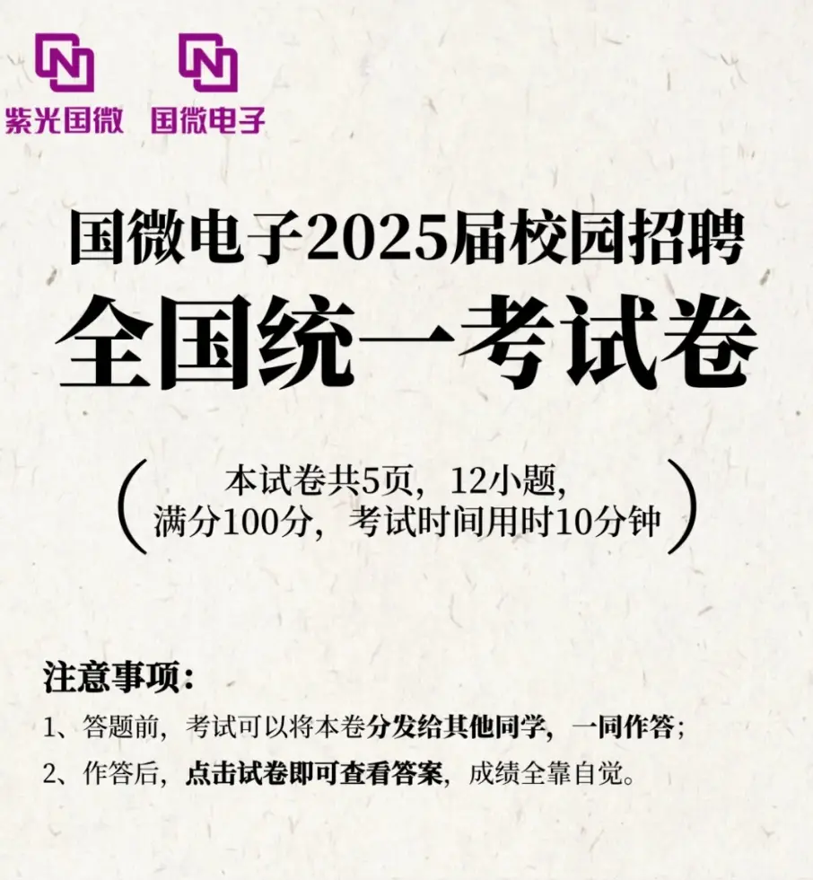

01 / CONTENT OPERATION
把持续发生的工作，
整理成可阅读的内容
公众号承载着新闻、招聘、培训与组织议题等不同内容。高频更新之下，先辨别信息的用途，再选择写法和视觉入口。
155篇公众号内容
2024.05 — 2024.12
2024.05 — 2024.12
41新闻
39培训
26招聘
22服务文化
27其他
从高频内容运营，到业务议题与年度节点传播
在半导体企业的人力资源部，持续参与公众号内容与重点项目传播。面对新闻、招聘、培训、管理议题和组织内容，我需要判断每件事的受众、信息重点与呈现方式，让分散的企业信息形成可阅读的内容。


公众号承载着新闻、招聘、培训与组织议题等不同内容。高频更新之下，先辨别信息的用途，再选择写法和视觉入口。
“提质增效”涉及质量、效率与成本，内容需要进入不同部门的工作现场；管理导向则需要从抽象要求走向可理解的问题和行动。
生产、工程与测试等部门的内容提供了不同的工作切面。处理这类议题时，重点是找到具体问题、实际行动及其与业务的关系。


“提质增效”是共同方向；具体写作仍要回到部门正在解决的问题。
一些内容不围绕活动，而是解释企业正在强调的工作方式。以“工程化”为例，文章需要让管理语言有清楚的语境与阅读入口。
北京大学专场宣讲临时需要一条面向本校候选人的“师兄师姐说”视频。从联系内部校友、确认内容，到现场拍摄、剪辑并交付宣讲团队，整个过程约 24 小时。
同样是企业内容，时效要求改变了判断顺序：先确认对象与核心信息，再组织拍摄和制作。
年度回顾、总结表彰与新年内容分别回应不同的时间节点。视频与图文相互配合，让散落在一年中的人物、事件和工作拥有共同的回望入口。
不同内容有不同的时效和深度：新闻需要及时交代事实，业务议题需要找到问题与行动，年度内容则需要从分散的素材里建立关联。
高频更新让我逐渐形成一个判断：企业传播的工作不止是寻找“可以发布的事情”，还包括选择什么值得说、谁需要理解，以及用什么形式讲清楚。
让事情被及时看见，
也让值得留下的内容被记住。